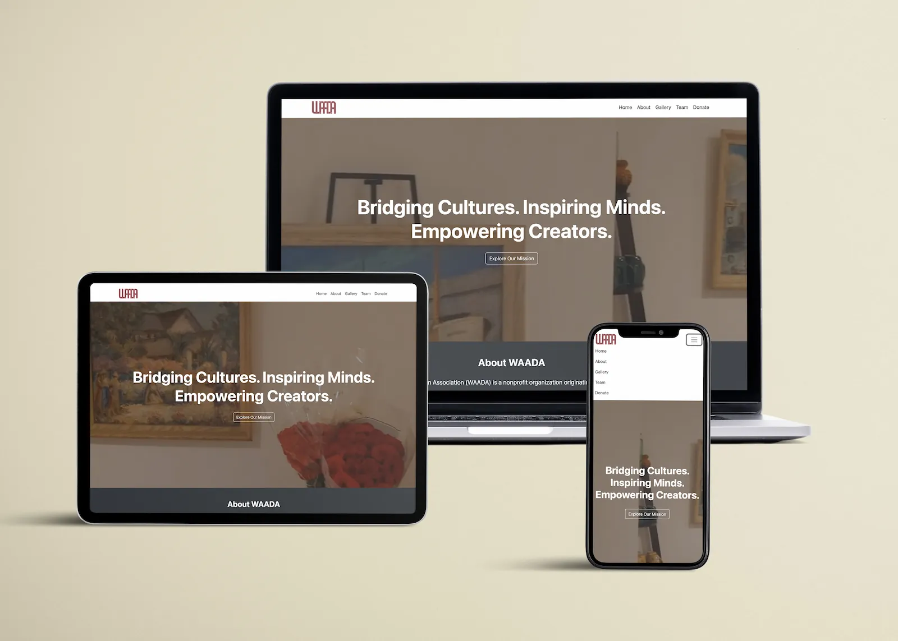
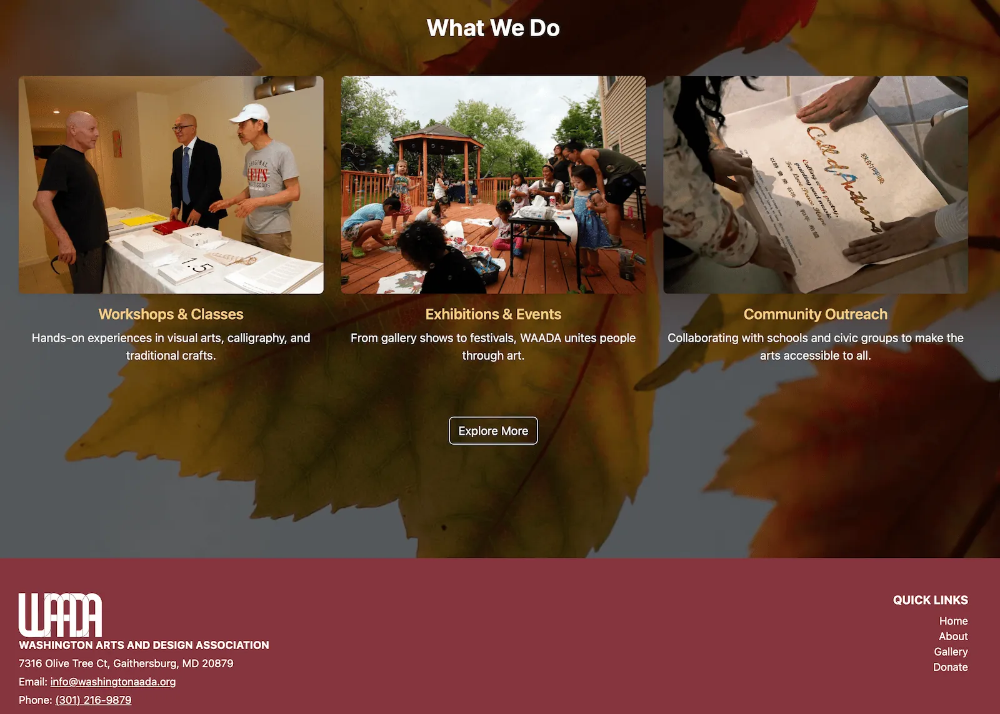

Role
Designer & Developer
UX/UI design, information architecture, visual design, front-end development, and ongoing website maintenance.
A responsive nonprofit website project focused on improving information architecture, visual hierarchy, content organization, and long-term maintainability for a cultural arts organization.

UX/UI design, information architecture, visual design, front-end development, and ongoing website maintenance.
A nonprofit organization supporting cultural, artistic, and community-based programs.
Built with responsive front-end code, Bootstrap layout patterns, and reusable sections.
Clear navigation, scannable content, mobile-friendly layout, and easy content updates.

WAADA needed a website that could present its mission, events, gallery materials, team information, donation details, and community programs in a more organized way.
The goal was not only to make the website look better, but also to make it easier for visitors to understand what the organization does and easier for the organization to update content over time.
I approached the project as a UX and information design problem: simplify the structure, create repeatable content sections, and build a responsive website system that can grow with the organization.
Nonprofit websites often contain many types of information: mission statements, programs, event photos, team members, donation information, and announcements. Without a clear structure, visitors may feel overwhelmed or miss important actions.
The main UX challenge was organizing this content so the website felt simple for users while still remaining flexible for future updates.
The project goal was to create a website structure that helps users quickly find key information, understand WAADA’s community work, browse visual content, and access donation-related information.
From a design perspective, the website needed consistent navigation, visual rhythm, clear content hierarchy, and reusable layouts for long-term maintenance.
Based on the organization’s content needs, I considered three main user groups: first-time visitors, community members, and internal organizers who need to update content.
Need to quickly understand what WAADA is, what it does, and why the organization matters to the community.
Need to browse events, galleries, programs, and community activities without getting lost in too much information.
Need reusable sections and consistent layouts so future updates can be added without redesigning the entire website.
I organized the website around the main content areas users would expect: Home, About, Gallery, Events, Team, and Donate.
This structure helps visitors move from general understanding to deeper browsing and finally to action-based content such as donation or contact information.
The page system also makes the website more scalable because new programs, galleries, or event updates can be added into existing sections.
The process followed a practical UX workflow: understand the content, organize the structure, design reusable layouts, and refine the website across devices.
Reviewed the organization’s core content needs, including mission, events, gallery materials, team information, donation content, and community programs.
Grouped information into clear sections and pages so visitors could scan, understand, and navigate the website more easily.
Developed responsive pages with HTML, CSS, JavaScript, and Bootstrap, then refined spacing, hierarchy, image display, and mobile behavior.
The visual direction supports clarity, trust, and ease of browsing while keeping the layout practical for a nonprofit organization.
Used section labels, large headings, short paragraphs, and card-based layouts to help users quickly scan each page.
Created repeatable section patterns for events, gallery content, team details, and donation information so the site remains consistent over time.
Adjusted spacing, image sizing, navigation behavior, and card layout so the website works across desktop, tablet, and mobile screens.
These screens show how the final design organizes homepage content, event information, and mobile browsing.
The final website gives WAADA a more organized digital platform for presenting its mission, visual content, team information, donation details, and community programs.
Visitors can move through the website more easily because the main content areas are separated into clear pages and sections.
The site uses stronger hierarchy, shorter content blocks, and visual sections to make nonprofit information easier to scan.
Reusable layouts make it easier to add future events, gallery updates, team changes, and organization announcements.
This project helped me connect graphic design, UX thinking, information architecture, and front-end development. I learned that a nonprofit website needs more than visual polish: it needs a clear structure that supports real communication needs.
The most important design lesson was that maintainability is part of user experience. A website that is easy to update can stay accurate, useful, and consistent for both visitors and the organization.